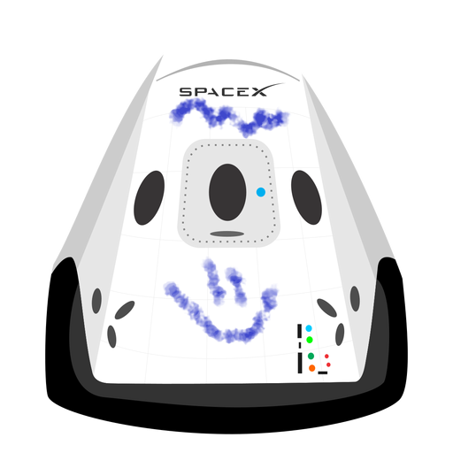

Hyperblog
Tu blog de cabecera
Este es el titulo atractivo e interesante del post
Y este es el párrafo de inicio donde vamos a explicar las cosas increíbles que se pueden hacer con ramas

Los blog son la mejor forma de compartir información y tus ideas. Mucho mas que ir a conferencias o salir en youtube. Excepto si eres un rockstar. Pero estadísticamente no lo eres.. por ahora.
Suscribete y dale like